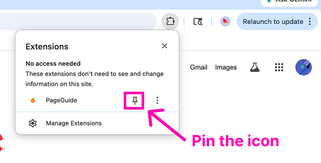
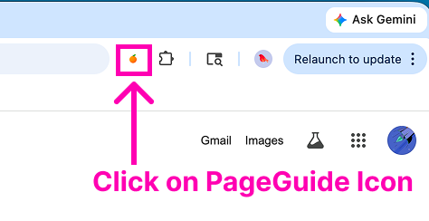

Thank you for your interest in PageGuide
To get started, we recommend installing the extension in one click from the Chrome Web Store. Below you will find both the one-click setup guide and our manual installation steps in case the Web Store installation fails.
One-Click Store Installation
Add the extension directly to your Chrome browser from the Web Store.
🍊 Download from Chrome StoreDownload Extension
Click the download button above, then click "Add to Chrome" in the web store interface.
Pin the Icon
Click the extensions puzzle icon (🧩) in the browser toolbar, find PageGuide, and pin it.

Select & Use
Select the 🍊 PageGuide icon in your toolbar to activate the grounded assistance side panel on any website.

Manual Installation Guide
If the Chrome Web Store installation fails, or if you prefer running developers' manual builds, please follow these exact, step-by-step instructions:
Download Source Archive
Download the latest zip file from the repository (master branch) and extract the folder on your computer.
Navigate to Extensions Page
Open a new tab in your Chrome browser and navigate to chrome://extensions/
Enable Developer Mode
Enable the Developer mode toggle switch in the top right corner of the Extensions dashboard.
Click Load Unpacked
Click the Load unpacked button in the top left corner.

Select the PageGuide Folder
Select the pageguide folder from the downloaded and extracted zip files (this is the directory containing `manifest.json`).

Click the Extension Icon
Click the extensions puzzle icon in the top right toolbar.
Pin the Extension Icon
Pin the extension icon to your browser toolbar for quick access.
Open & Use the Extension
Activate the sidebar helper by clicking the pinned 🍊 icon in the toolbar.
Manual Upgrade Instructions
- Download the latest source zip file.
- Unzip and replace the contents of your existing local pageguide folder.
- Navigate back to
chrome://extensions/and click the circular reload arrow icon on the PageGuide developer card.